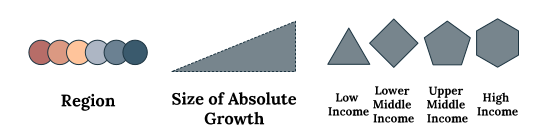
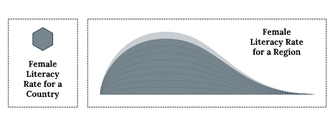

Literacy Rate measures the percent of the population that can read and write statements that are commonly used in everyday life. UNESCO segments this metric by age group (youth, adult, elderly) and gender because these groups receive different qualities of education, which is influenced by factors such as the cultural standards for genders, demographic changes, and economic stability. For example, war and instability would leave some countries in poverty, and education would not be easily accessible. Historically, many cultures have favored men, granting them easier access to learning and then employment. Technology has also been growing rapidly, influencing how quickly the younger generation gains information.
This report summarizes the growth of literacy rates from 2010 to 2020, focusing particularly on female adults (ages 15 and up), their literacy rates split by countries and their gender gap in education.
The chart below compares the 6 main regions provided by The World Bank of Data (North America has no data and is excluded). The regions are hills ordered from left to right using the 2020 female literacy rate, which is the height.
Sub-Saharan Africa has the lowest female literacy rate, starting from 50% in 2010 but increasing the most rapidly by an overall 11% over the past 10 years. On the other side of the spectrum, Europe & Central Asia, which mostly consists of higher income and developed countries, started at a 97% female literacy rate in 2010, increasing only by an overall 1% to 98% over the past 10 years.
The past decade has shown that all regions have been improving literacy rates, yet regions with more room to grow are improving much faster than regions that already have a higher literacy rate.
The next deep-dive takes a look at the country composition of the 6 regions. Not all countries improve their education quality at the same rate, and there must be some countries that have a higher economic standing than others in close proximity. The following chart contains many elements (e.g. position, shape, color, stroke), but it will be introduced step by step. Keep scrolling to learn more.
This is a chart that currently illustrates literacy rates. It's the same 2020 female literary rate comparison by region that you saw above, but we're going to add more depth to it.
This graph has 2 axes to indicate the relationship between the female literacy rate (x-axis, left to right) and the literacy gap between genders (y-axis, bottom to top).
The 2020 global average female literacy rate was 83.5%, and the male literacy rate was 90.2%, a 6.7% overall gap between the genders. This is indicated by "X".
These are countries that contribued the 83% female global literacy rate. Like the "X", they are also positioned by their female literacy rate and their respective gender gap. The color, size, and shape symbolize each country's region, amount of overall (absolute) growth, and income group, respectively.
There's a negative correlation with female literacy rate and gender gap. As literacy rate improves, the gender gap closes.
Using relative growth is a better measure of understanding how the literacy rate changed over time. Relative Growth is indicated by a dotted line, and it is usually higher than the absolute growth.
The country Guinea in Sub-Saharan Africa had the highest relative growth of 27.7%.
To better visualize the gender gap (y-axis), each country's male literacy rate counterpart is illustrated either to the left (if males have a higher literacy rate than females) or the right (if females have a higher literacy rate than males).
While most countries have a higher male literacy rate than female literacy rate, the Latin America & Caribbean region has a different spread of gender gap, where many of its countries have a female literacy rate that is 1 to 3% higher than male literacy rate.
Countries don't necessarily improve at a constant rate. For countries with at least 8 years of data, there are small crumbs of the same shape and color as the country's latest data point. Their position shows the country's historical female literacy rate and gender gap. Generally, they show progress towards improving the literacy rate and closing the gender gap.
Some countries have historical movement of literacy rates moving downwards and towards the right in the chart, which indicates improving female literacy rates to lessen the gender literacy gap.
The large circle extending from the bottom regions show the average female literacy rate and difference from the average male literacy rate.
The Sub-Saharan Africa region has the lowest literacy rates (lowest on x-axis), but the South Asia region has the widest gender gap (highest on y-axis).
Sometimes the average alone is not enough to understand how similar the countries in the same region are. If the median and average are far apart, then there could be outliers or uneven spread. The median is a large circle with dotted outline. The small dot at the bottom of the link is on the side where the average is.
Many countries, particularly from East Asia & Pacific and Europe & Central Asia, have literacy rates concentrated above 95% which skew the distribution to the left.
The region Middle East & North Africa has the largest spread of literacy rates. Although the median female literacy rate is 94%, the average is 73%, which is driven down by Morocco and Egypt.
This concludes the walkthrough of the chart, and interactions will enable after this textbox moves off page. Hover over these icons to see their name and literacy rates.
A legend with all the encodings is at the bottom of the chart.
This historical data is provided by the World Government Summit with the Data Visualization entry of "What Just Happened?" The link to the dataset is here. The female literacy rates and male literacy rates are available from the World Bank. The data used includes the country, its region, its income group, and its literacy rates for female and male between 2010 and 2020.
The UNESCO glossary provided the definition of literacy rate, its indication on the quality of education systems, and some external factors.
This dataset had to be explored, analyzed, and curated before creating a data visualization. Some countries had sparse data, some were missing entirely, the data points were too cluttered, etc.. Therefore, the following rules were applied to curate the dataset systematically.
Conceptualized and built in January 2023
Sarina Chen | ifcolorful.com | See GitHub